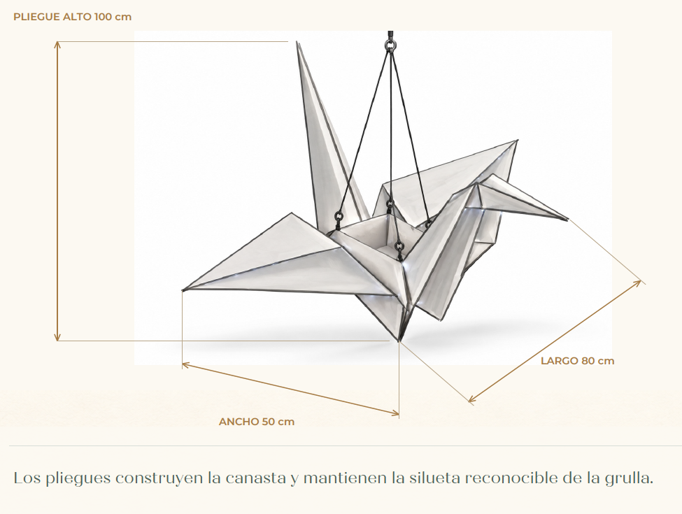

Tu boceto guía la silueta. G04 tiene alas más largas, una canasta de 30 × 30 cm y una sola argolla; proporciones de 140 × 100 × 100 cm. Las cotas impresas en el boceto son anteriores a esta propuesta.

Los planos G01 no corresponden a esta forma. Se retiraron de las descargas de esta revisión para no mezclar geometrías. G04 reduce el centro a 30 × 30 cm útiles, alarga las alas y vuelve a una sola argolla, sin cruceta. Incluye tres blueprints y tres pliegos de guía visual con las mismas 41 piezas y medidas. Validar el cuelgue con el prototipo antes de cargarlo.